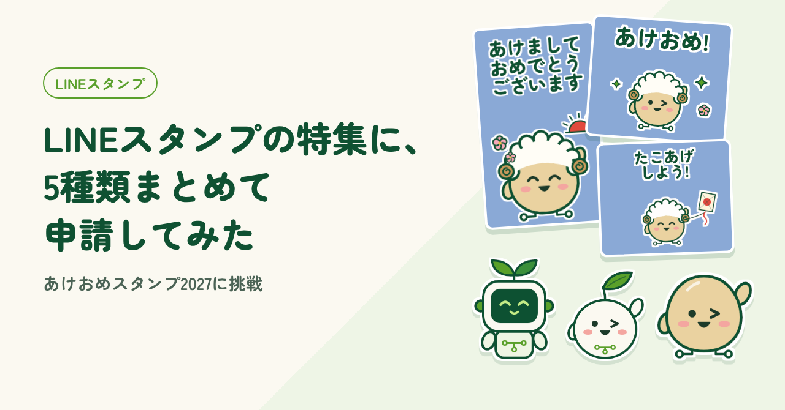
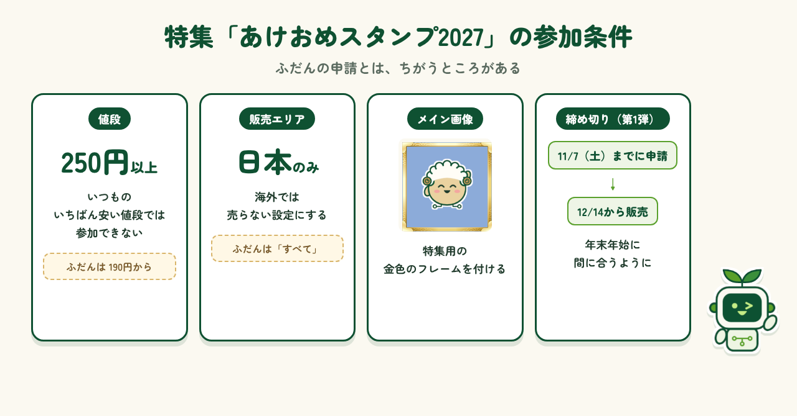
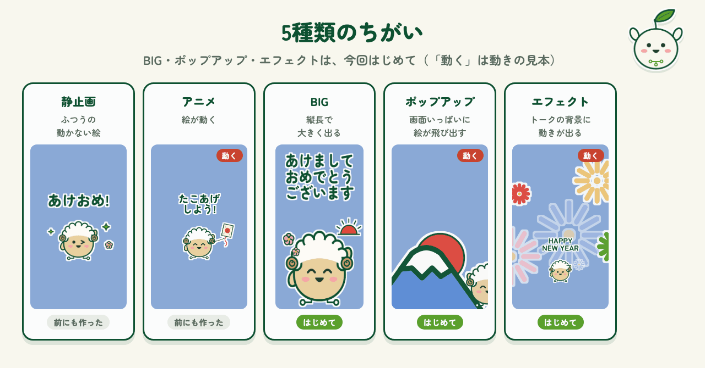
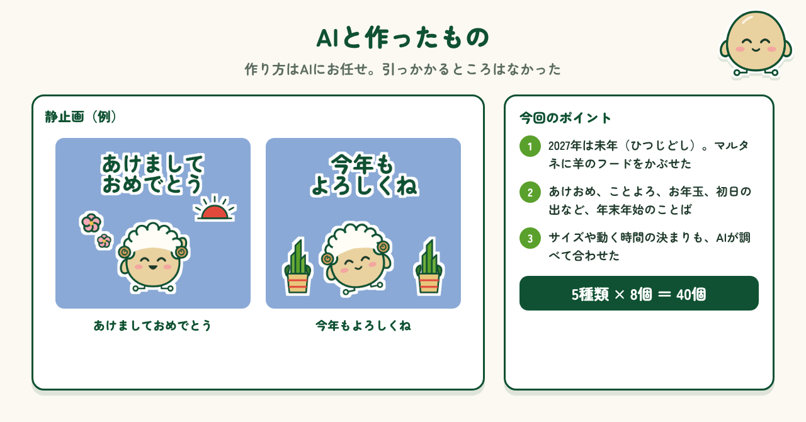
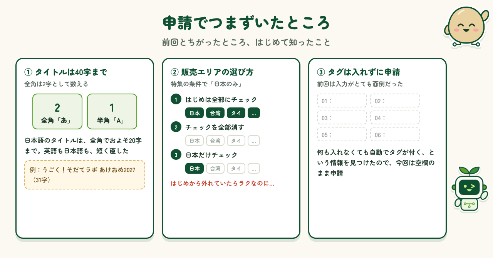

はじめに
LINEスタンプには、季節やイベントに合わせた「特集企画」があります。条件を満たして申請すると、特集のページに並べてもらえるチャンスがあります。今回見つけたのは、年賀の特集「あけおめスタンプ2027」です。こういう特集企画には、これからも積極的に参加していきたいと思っています。そこで今回は、スタンプの種類を5つに広げて、まとめて申請してみることにしました。
特集の参加条件
特集に参加するには、ふだんの申請とはちがう条件がありました。まず値段は250円以上です。いつもの一番安い値段では参加できません。販売するのは日本だけで、メイン画像には特集用の金色のフレームを付けます。締め切りは何回かに分かれていて、第1弾の11月7日までに申請すると、12月14日から販売されます。年末年始に間に合わせるには、早めの申請が大事です。

5種類のちがい
LINEスタンプには、いくつかの種類があります。ふつうの動かない「静止画」、絵が動く「アニメ」、縦長で大きく表示される「BIG」、トーク画面いっぱいに絵が飛び出す「ポップアップ」、トークの背景に動きが出る「エフェクト」です。静止画とアニメは前にも作りましたが、BIG、ポップアップ、エフェクトはまだ作ったことがありません。挑戦してみたかったので、今回は5種類すべてやってみました。

AIと作ったもの
2027年は未年（ひつじどし）なので、マルタネに羊のフードをかぶせました。ことばは「あけおめ」「ことよろ」「お年玉ちょうだい」「初日の出」など、年末年始のあいさつです。5種類とも8個ずつで、全部で40個になりました。絵を描くのも、種類ごとのサイズや動く時間の決まりに合わせるのも、AIにお任せでした。作り方で引っかかることはありませんでした。

申請でつまずいたところ
つまずいたのは、申請画面のほうでした。タイトルは40字までですが、全角の文字は2字として数えられます。これには初めて気づき、英語も日本語も短く直しました。販売エリアは、はじめから全部の国にチェックが入っていて、いったん全部消してから日本だけを選びます。最初から外しておいてほしかったところです。前回面倒だったタグは、入れなくても自動で付くという情報を見つけ、今回は空欄のまま申請しました。

まとめ
特集企画は、ふだんとちがう条件がいくつかあるので、まず募集ページをよく読むことが大事だと感じました。5種類のスタンプは、AIのおかげで迷わず作れました。手間がかかったのは、むしろ申請画面の入力です。字数の数え方や販売エリアの選び方など、一度わかれば次からは迷いません。その後、5種類とも審査に通り、12月14日から特集のページに並ぶことになりました。お正月に使ってもらえたらうれしいです。
制作メモ
段落の構成と文章の下書きはAI（Claude）と作り、各段落に自分の感想を入れて、1段落ずつ確認・修正しました。図もAIと一緒に作っています。